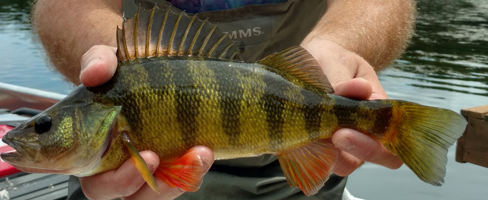

We introduced the linear mixed model this week, and we looked at examples of how to incorporate random effects in our inference within both frequentist and Bayesian frameworks for analysis. We will continue to probe these tools in our lab exercise this week and build some comfort working with these hierarchical models. By the end of this lab, you should be comfortable 1) specifying random effects in models, 2) running those models using restricted maximum likelihood (REML) estimation and Bayesian hierarchical models, 3) graphically dsiplaying results, and 4) communicating the methods and the results of this work through technical writing.
Note: these models require using some code that we have not covered explicitly in class. We will be working with uncorrelated random slopes and intercepts this week. These are covered in Chapter 12 in Kery (2010). Specifically, the code and tutorial you will need are in 12.4.1 and 12.4.2.
This week we will play with Yellow Perch data from the New York State Department of Environmental Conservation (NYSDEC) statewide fisheries database. These data were collected by the NYSDEC and others throughout NY during the past few decades.
Let’s have a look:
# Read in the data file
# We are reading it in with the optional
# argument because we don't want to deal
# with code relicts when we start
# dropping factor levels
fish = read.csv("allwaters.txt", stringsAsFactors = FALSE)
# Look at the data structure
str(fish)
# And, have a look at the first few lines of data
head(fish)'data.frame': 64935 obs. of 15 variables:
$ Water : chr "Lake Ronkonkoma" "Lake Ronkonkoma" "Lake Ronkonkoma" "Lake Ronkonkoma" ...
$ County : chr "Suffolk" "Suffolk" "Suffolk" "Suffolk" ...
$ Region : int 1 1 1 1 1 1 1 1 1 1 ...
$ Date : chr "9/8/2004 0:00:00" "9/8/2004 0:00:00" "9/8/2004 0:00:00" "9/8/2004 0:00:00" ...
$ GearCd : chr "1G0191" "1G0191" "1G0191" "1G0191" ...
$ IF_Key : int 1467469506 17576464 -1806054190 -658875809 -1027593693 1548594411 654285523 573244617 1576250293 -216573083 ...
$ Length : int 611 260 281 423 492 264 452 462 265 488 ...
$ Weight : int 2268 133 168 693 1076 141 870 970 147 1087 ...
$ SpeciesCd: int 626 626 626 626 626 626 626 626 626 626 ...
$ Name : chr "Walleye" "Walleye" "Walleye" "Walleye" ...
$ Age : int 7 1 1 3 5 1 3 3 1 3 ...
$ IF_ID : int 1467469506 17576464 -1806054190 -658875809 -1027593693 1548594411 654285523 573244617 1576250293 -216573083 ...
$ NYTME : num 6583 6583 6583 6583 6583 ...
$ NYTMN : num 45211 45211 45211 45211 45211 ...
$ Altitude : num 55 55 55 55 55 55 55 55 55 55 ...
Water County Region Date GearCd IF_Key Length Weight SpeciesCd Name Age IF_ID NYTME NYTMN Altitude
1 Lake Ronkonkoma Suffolk 1 9/8/2004 0:00:00 1G0191 1467469506 611 2268 626 Walleye 7 1467469506 6583 45211 55
2 Lake Ronkonkoma Suffolk 1 9/8/2004 0:00:00 1G0191 17576464 260 133 626 Walleye 1 17576464 6583 45211 55
3 Lake Ronkonkoma Suffolk 1 9/8/2004 0:00:00 1G0191 -1806054190 281 168 626 Walleye 1 -1806054190 6583 45211 55
4 Lake Ronkonkoma Suffolk 1 9/8/2004 0:00:00 1G0191 -658875809 423 693 626 Walleye 3 -658875809 6583 45211 55
5 Lake Ronkonkoma Suffolk 1 9/8/2004 0:00:00 1G0191 -1027593693 492 1076 626 Walleye 5 -1027593693 6583 45211 55
6 Lake Ronkonkoma Suffolk 1 9/8/2004 0:00:00 1G0191 1548594411 264 141 626 Walleye 1 1548594411 6583 45211 55As you can see, there are a ton of lakes in this dataset, and it contains information for both yellow perch (Perca flavescens) and walleye (Sander vitreus). We only want to work with lakes in Region 4, but the lakes are scattered throughout NY. So, before we can start working with the data we want, we need to get them out of this mess.
# Remove observations for which we lack mass
fish = fish[fish$Name=='Yellow Perch' & fish$Region==4, ]
# Check to see how many rows we have left
nrow(fish)
[1] 2786And the loss of data here is a sad reality. In any case, this is more than enough for what we will do this week.
Following in the footsteps of the great Kery (2010), we will play around with some length-weight relationships this week. Length-weight regression is a standard tool used in fishery assessment, but also has application to a wide variety of body condition metrics in other species (including people!). And, the methods that we will use to analyze length-weight relationships are more generally just one example of the linear mixed models we might use whenever we have normal or log-normal data that we want to use for inference.
This week, we are going to fit some random effects models in order to investigate relationships between length and mass for fish collected in different lakes. We will start with a random effect on the intercept, and you will push on to fit a model that includes random effects on both the intercepts and slopes.
For our first example, we will fit length-weight regressions for fish with random effects of age on the intercept.
We will start by taking a look at the data we have to work with. First, we want to see how many unique waterbodies we have, and what they are.
We see that we have thirteen waters left in the data that actually contain yellow perch and are in Region 4. Let’s also make ourselves a variable to store the number of lakes we have to make the programming below a little easier.
# How many unique lakes do we have left?
sort(unique(fish$Water))
[1] "Blenheim Gilboa Reservoir" "Burden Lake" "Canadarago Lake" "Dunham Reservoir" "Dyking Pond" "Goodyear Lake" "Kinderhook Lake"
[8] "Mariaville Lake" "Rossman Pond" "Schenevus Lake" "Schoharie Reservoir" "Tomhannock Reservoir" "Unnamed Water"
# Count the number of unique values and store it in an object
nwaters = length(unique(fish$Water)) Okay, now that we know what we are working with here, we can specify our models in much the same way that we did in lecture this week.
We start by estimating the model with REML. The model converges quickly.
# Load the lme4 library
library(lme4)
# Fit the model
ypLME = lmer(I(log10(Weight))~I(log10(Length)) + (1|Water), data=fish)
# Examine the fit
summary(ypLME)
Linear mixed model fit by REML ['lmerMod']
Formula: I(log10(Weight)) ~ I(log10(Length)) + (1 | Water)
Data: fish
REML criterion at convergence: -2384.8
Scaled residuals:
Min 1Q Median 3Q Max
-5.5287 -0.5322 0.0217 0.5541 5.5680
Random effects:
Groups Name Variance Std.Dev.
Water (Intercept) 0.002782 0.05274
Residual 0.004934 0.07024
Number of obs: 984, groups: Water, 12
Fixed effects:
Estimate Std. Error t value
(Intercept) -5.48908 0.04219 -130.1
I(log10(Length)) 3.23911 0.01754 184.7
Correlation of Fixed Effects:
(Intr)
I(lg10(Ln)) -0.927We see that we got a nice tight fit to the data in this case. Also notable in this specific model is the negative correlation between the fixed effects. This is a well-known phenomenon, but worth recognizing. If we wanted to go further, we could account for this correlation in our model structures directly.
For reporting, we could make a graph showing the mean of the regional relationship, or we could dig into the random coefficients for each model using the methods detailed in the lecture material from this week.
Next, we will fit the model in JAGS.
Here, we tell JAGS that the response (mass) is a random variable that has a normal distribution with a mean of \(\mu\), and a precision of \(\tau\). Recall that \(\tau\) is precision (the inverse of \(\sigma\)). Next, we tell JAGS that the mean (expected value) of the response can be described as a linear function of waterbody and length. We specify waterbody-specific priors for the intercept term, \(\alpha\), each of which has a mean of \(\mu_int\) and a standard deviation of \(\sigma_int\). The values of hyperparameters \(\mu_int\) and \(\sigma_int\) are drawn from hyperpriors on the regional mean and standard deviations for the length-weight relationship. Finally, we specify a single prior for \(\beta\) to indicate that the slope (relationship between length and mass) is the same across all water bodies.
Specify the model
# Write model
modelstring="
model {
# Likelihood
for (i in 1:n) {
mass[i] ~ dnorm(mu[i], tau) # The random variable
mu[i] <- alpha[water[i]] + beta* length[i] # Expectation
}
# Priors
for (i in 1:nwaters){
alpha[i] ~ dnorm(mu.int, tau.int) # Random intercepts
}
mu.int ~ dnorm(0, 0.01) # Mean hyperparameter for random intercepts
tau.int <- 1 / (sigma.int * sigma.int)
sigma.int ~ dunif(0, 10) # SD hyperparameter for random intercepts
beta ~ dnorm(0, 0.01) # Slope
tau <- 1 / ( sigma * sigma) # Residual precision
sigma ~ dunif(0, 10) # Residual standard deviation
}
"
writeLines(modelstring, "ypModel.txt")Make a list of the data for JAGS
# Bundle data
fish.data <- list(
mass = log10(fish$Weight),
water = as.numeric(as.factor(fish$Water)),
length = log10(fish$Length),
nwaters = length(unique(fish$Water)),
n = nrow(fish))Specify initial values for each of the Markov chains
# Inits function
inits <- function(){list(
mu.int = rnorm(1, 0, 1),
sigma.int = rlnorm(1, 0, 1),
beta = rnorm(1, 0, 1),
sigma = rlnorm(1, 0, 1)
)}Specify parameters to monitor
# Parameters to estimate
parameters <- c("alpha", "beta", "mu.int", "sigma.int", "sigma")Define MCMC settings
# MCMC settings
ni <- 5000
nb <- 1000
nt <- 5
nc <- 3Calibrate the model
# Load the R2jags library
library(R2jags)
# Start Gibbs sampling
ypModel <-jags(fish.data, inits, parameters, "ypModel.txt", n.thin=nt,
n.chains=nc, n.burnin=nb, n.iter=ni)Take a look at the output and diagnostics
First, we can take a look at the model coefficients and diagnostics. Here, I am just going to print the model results for mean, sd, 95% CRI, and Neff.
# Get parameter estimates all by themselves
res = ypModel$BUGSoutput$summary[, c(1,2,3,7,8,9)]
# Inspect results
print(res, digits = 3)After a quick look at the convergence diagnostics, things look more or less a-okay, but we may need to bump up our sampling to get a larger sample size if we ever want to get this sucker published.
Usually, we don’t get too sucked into the interpretation of results in this class, but the actual parameters of this equation have some pretty cool meaning in and of themselves. For length-weight regressions, the parameter \(\beta\) actually is a measure of how fish rotundity changes throughout their life. For cases where \(\beta\) > 3, we say that the fish generally gets fatter as it increases in length. At \(\beta\) < 3, we assume that fish get skinnier as the grow in length. This can be really useful for monitoring population trends. For these data, it is clear that beta is “significantly” larger than 3 given that the 95% CRI for our estimate does not overlap zero. But what if some of these populations had \(\beta\) < 3.0 and we are just not picking it up because we only estimated one \(\beta\)?!
Did you see that one coming?
Estimate) and standard errors (Std. Error) in the Fixed effects table in your model summary().This work is licensed under a Creative Commons Attribution 4.0 International License. Data are provided for educational purposes only unless otherwise noted.